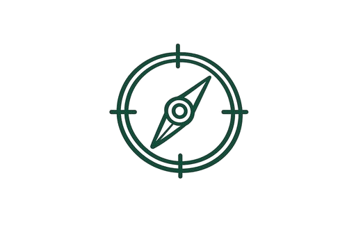
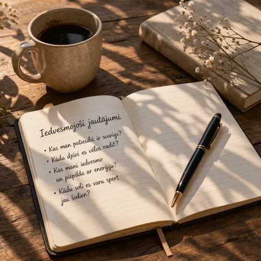
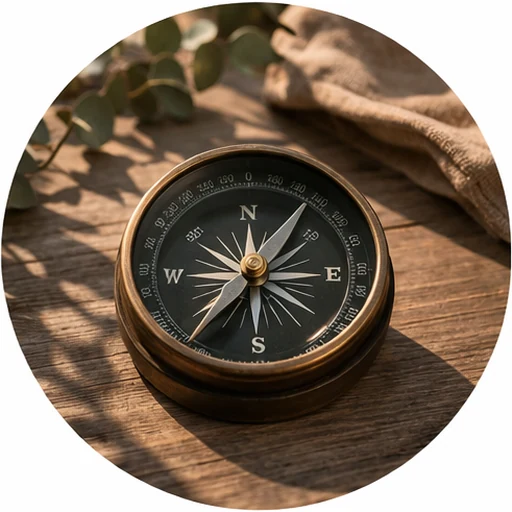

Atbalsts virziena izvēlē
Droša telpa, kurā vari būt tu pats. Tā ir strukturēta saruna, kuras laikā tu iegūsti skaidrību, ieraugi iespējas un savus resursus, lai pieņemtu labākos lēmumus un virzītos uz priekšu.

Atbalsts virziena izvēlē
Skaidrība par domām un resursiem
Izaugsme, apzinātība, iekšējais spēks un pārliecība par sevi
Konkrēti soļi rezultātu sasniegšanai
Vari atklāti runāt par to kas Tev ir svarīgs.

Es uzdodu jautājumus, kas palīdz ieraudzīt jaunas perspektīvas.
Tu nonāc pie skaidrības un svarīgākajām atziņām.

Tev ir konkrēti soļi, kurus veikt jau tagad.

Esmu koučs, personāla vadības un cilvēku attīstības profesionāle ar vairāk kā 15 gadu pieredzi darbā ar cilvēkiem un organizācijām.
Sadarbībā man ir svarīga atklātība un godīgums. Atklātas sarunas, kurās var atklāt lietas patiesi un bez izskaistināšanas, saglabājot cieņu. Un vienlaikus man ir svarīga droša vide, kurā var domāt, runāt un meklēt atbildes sev ērtā tempā.
Bezmaksas iepazīšanās saruna, lai saprastu Tavu situāciju, vajadzības un to, vai koučings šobrīd Tev ir piemērots.
Individuāla koučinga sesija konkrētam jautājumam, situācijai vai lēmumam — ar fokusu uz skaidrību un konkrētiem nākamajiem soļiem.
Padziļinātai izpētei un sarežģītākām tēmām, kur nepieciešams vairāk laika, telpas un strukturēta pieeja risinājuma atrašanai.